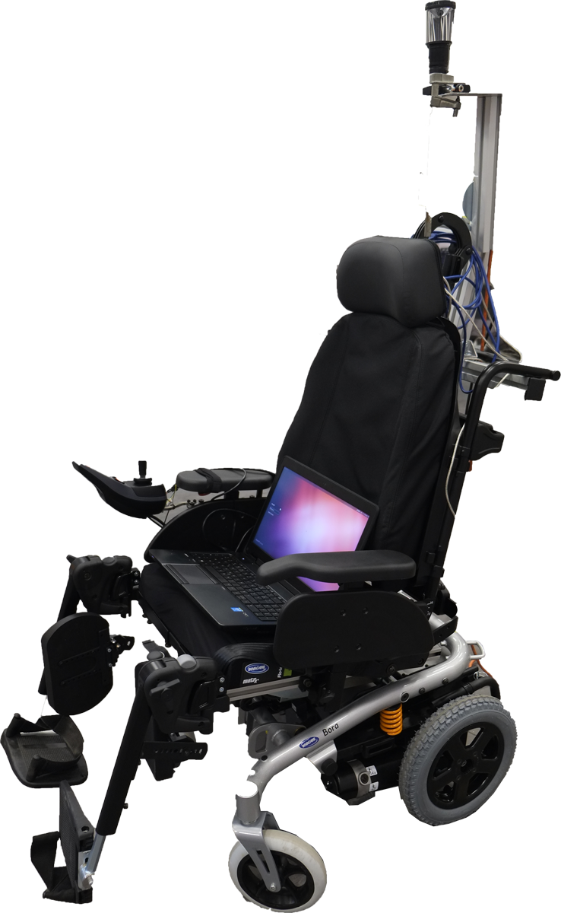

COALAS project:
Introduction:
The COALAS project (Cognitive Assisted Living Ambient System) aims to develop an autonomous cognitive platform, combining efficient wheelchair navigation and assistive
capabilities of a humanoid robot.
My work consists in conception, implementation and evaluation of a visual navigation system on a wheelchair equipped with an omnidirectional camera.
The proposed visual navigation method is based on visual path following technique :
- The first step consists in acquiring a set of key images used as a visual memory during the second step.
- Using the visual memory of the first step, we perform successive visual servoings by considering each key image as a temporary target that we aim to reach.

Related papers:
-
Youssef Alj, Guillaume Caron, Nicolas Ragot. Omnidirectional photometric visual path following for wheelchair autonomous driving
1st Healthcare Technology Days, CARETECH, Dec 2014, Rouen, France.
pdf
-
Youssef Alj, Guillaume Caron. Featureless omnidirectional vision-based control of non-holonomic mobile robot
IEEE Int. Conf. on Ubiquitous Robots and Ambiant Intelligence, URAI'15, Oct 2015, Goyang, South Korea. pp.95-100.
pdf
Project partners:
- Université de Picardie Jules Verne, MIS laboratory, 33 rue Saint-Leu, 80039 Amiens Cedex, France.
- ESIGELEC - IRSEEM Technôple du Madrillet, Avenue Galilee, 76801 Saint Etienne du Rouvray, France.
- East Kent Hospitals University NHS Foundation Trust Kent and Canterbury Hospital, Ethelbert Road, Canterbury, Kent, CT1 3NG, United
Kingdom.
- School of Engineering and Digital Arts University of Kent,
Jennison Building, Canterbury, Kent, CT2 7NT, United Kingdom.